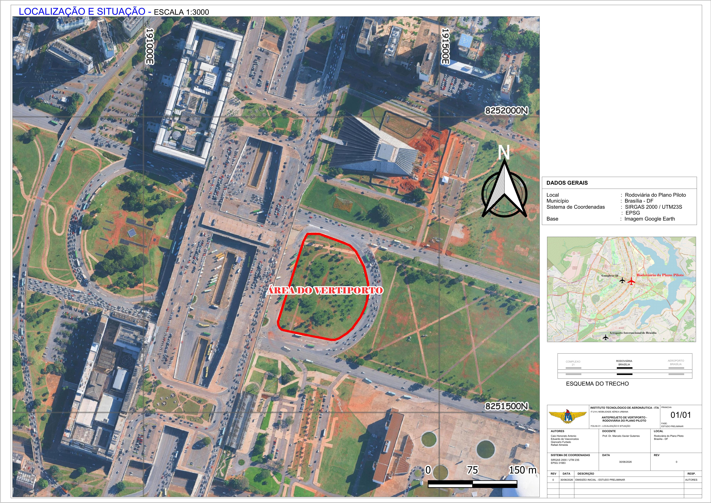
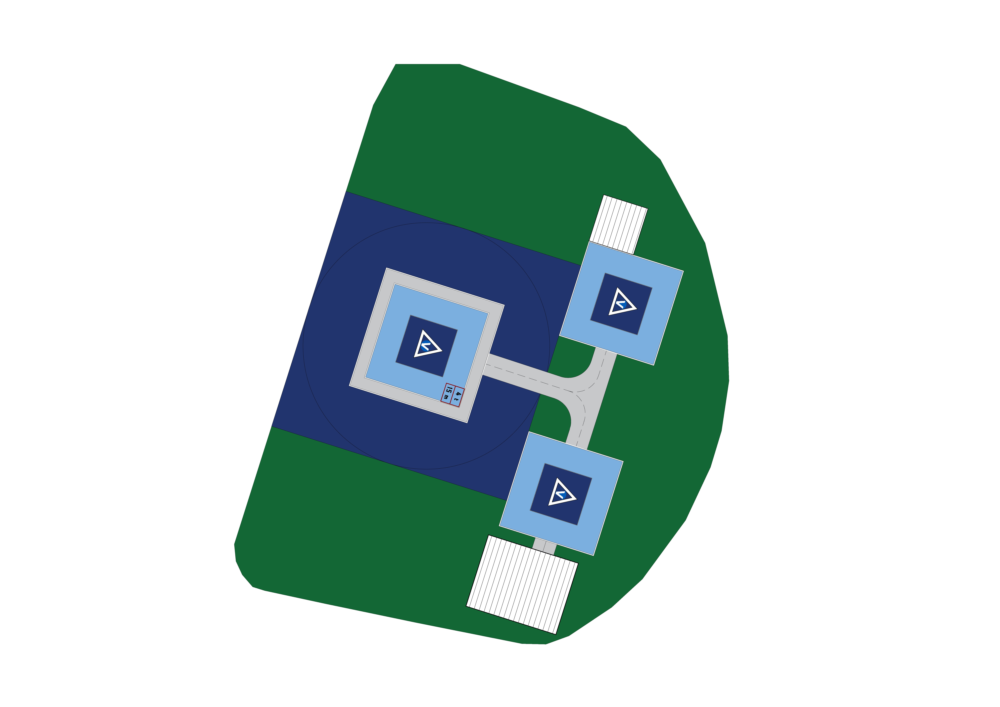
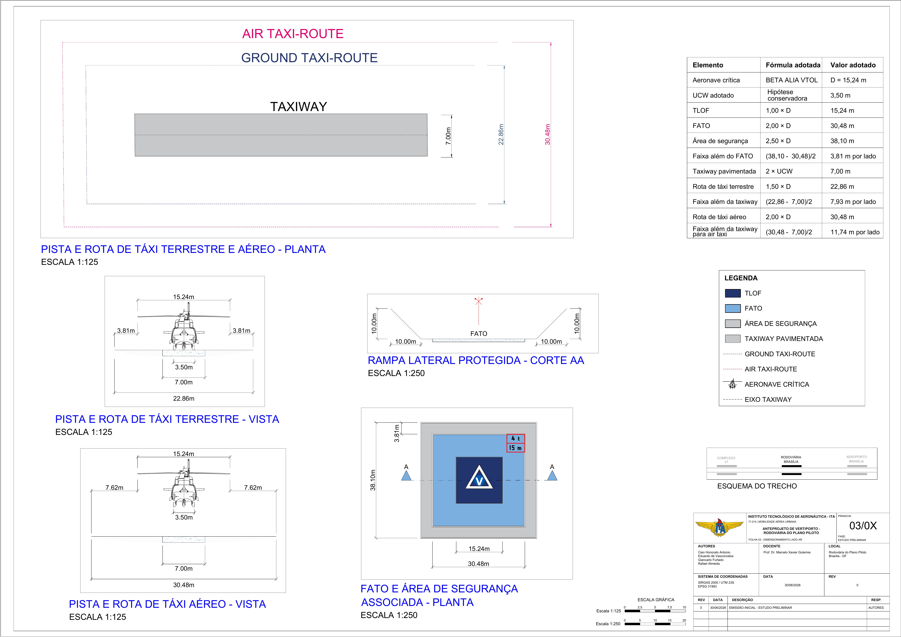
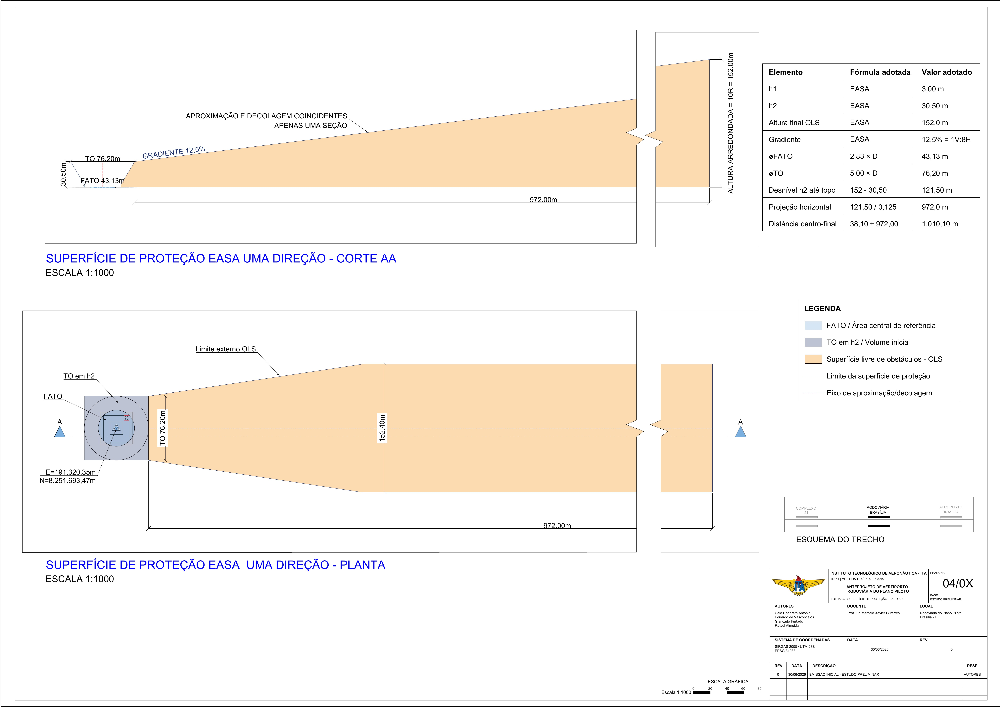
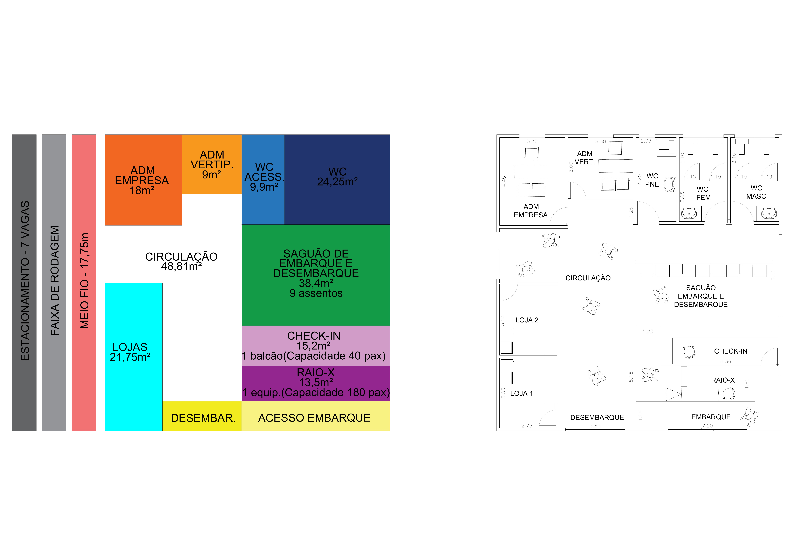
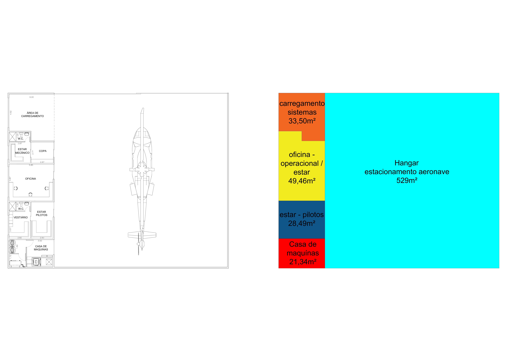

Por que Brasília?
De um universo de 10 metrópoles brasileiras avaliadas por análise multicriterial, Brasília emergiu como o terceiro mercado mais viável para implantação de UAM — e o mais promissor em termos de crescimento, com menor saturação aérea e perfil socioeconômico favorável à adoção precoce da tecnologia.
Brasília concentra o maior PIB per capita entre as capitais brasileiras, com uma população executiva e governamental que já utiliza serviços premium de mobilidade.
O espaço aéreo de Brasília é menos congestionado que São Paulo e Rio, reduzindo a complexidade de integração ATM/UTM para operações de eVTOL.
A rota Rodoviária → Aeroporto Internacional representa um corredor de altíssima demanda potencial, com viagem que hoje consome 40–60 min de carro.
Análise histórica dos dados de SBBR confirma elevada disponibilidade de condições VMC ao longo do ano, essencial para operações regulares de eVTOL.
Rodoviária do Plano Piloto
Três candidatos foram avaliados pelo método AHP com quatro critérios ponderados. A Rodoviária do Plano Piloto obteve o maior score — 0,844 — graças à combinação de acessibilidade multimodal, área disponível e posicionamento no corredor de maior renda do DF.
Brasília
Brasília


Demanda e Capacidade
A demanda foi calculada a partir dos dados históricos de movimentação de helicópteros no Aeroporto de Brasília (SBBR), aplicando a taxa de pico por hora e o fator de transferência modal para eVTOL. O vertiporto foi dimensionado com folga operacional em relação à demanda de pico atual, comportando o crescimento projetado do mercado.
Metodologia de Cálculo
Capacidade Instalada vs. Demanda
Projeto Técnico — Lado Ar
O dimensionamento do lado ar foi realizado com base na aeronave crítica BETA ALIA VTOL (D = 15,24 m), seguindo os critérios EASA e ICAO para vertiportos de superfície. A superfície de proteção OLS garante operação segura com gradiente de 12,5% e altura final de 152 m.
Dimensionamento Lado Ar

Superfície de Proteção — OLS/EASA

Pavimento do TLOF
Não existem até o momento normas específicas da FAA, EASA, ICAO ou ANAC para projeto de pavimentos em vertiportos eVTOL. Este estudo adota métodos simplificados de engenharia e benchmarks disponíveis na literatura, calibrados para a aeronave crítica ALIA A250 (MTOW = 2.720 kg), na ausência de dados oficiais publicados por OEMs ou operadores.
Metodologia de Cálculo — 3 Passos
Relação estática básica: W(roda) = W(aeronave) / f · N
Com 2 rodas suportando 90% da carga e fator dinâmico f = 1,1 (táxi):
(f = 1,1)
pouso normal
FAA EB-105A (1,5 × GW)
A FAA EB-105A define carga dinâmica de pouso normal para eVTOL = 1,5 × GW (peso bruto).
p = W(roda) / A — a pressão do pneu é aproximadamente igual à pressão recebida pelo pavimento. Nota: a pressão pode ser mais determinante que o peso bruto.
(premissa de engenharia)
~689 kPa · A = 203 cm²
Área de contato do pneu ALIA A250: 14 × 14,5 cm = 203 cm². Dados de OEMs não disponíveis publicamente — faixas são premissas atuais do setor.
O método FAA (FAARFIELD) correlaciona carga da roda, pressão dos pneus, operações anuais e CBR do subleito à espessura de concreto. Para eVTOL: 8–12 ops/dia × 250 dias = ~3.000 ops/ano.
Benchmarks de Espessura de Concreto
| Classe de aeronave | GW (peso bruto) | Espessura de concreto |
|---|---|---|
| Helicóptero / GA pequena | < 5.700 kg | 10–15 cm |
| Helicóptero / GA média | 5.700–13.500 kg | 15–20 cm |
| Jato executivo | — | 20–40 cm |
| Comercial narrowbody | — | 40–80 cm |
| Comercial widebody | — | > 100 cm |
| ALIA A250 · eVTOL (operação inicial) | 2.720 kg | 15–20 cm |
| ALIA A250 · eVTOL (operação comercial) | 2.720 kg | 20–25 cm |
| ALIA A250 · eVTOL (alto tráfego) | 2.720 kg | 20–35 cm |
Estrutura Típica do Pavimento — TLOF
- FAA EB-105A — Vertiport Design, Supplemental Guide to AC 150/5390-2D (2024)
- FAA AC 150/5320-6G — Airport Pavement Design and Evaluation (2021)
- EASA Prototype Technical Design Specifications for Vertiports (2022)
- ICAO Aerodrome Design Manual: Pavements, Doc 9157 — Parte 3 (2022)
- FAA FAARFIELD 2.1 — Rigid and Flexible Iterative Elastic Layered Design
- ANAC — Manual de Cálculo de PCN de Pavimentos Aeroportuários (COMFAA 3.0)
Infraestrutura de Operação
O vertiporto foi concebido como uma instalação completa e autossuficiente — com terminal de passageiros, hangar para manutenção e carregamento das aeronaves, e todos os ambientes de apoio necessários para operação segura e contínua.
Terminal de Passageiros — TPS · 216 m²

Hangar e Apoio Operacional · ≈ 662 m²

Próximos passos
Este estudo preliminar representa a Fase 0 de um ciclo de desenvolvimento que se estende até a operação comercial. As fases seguintes envolvem detalhamento técnico, licenciamento regulatório e implantação física da infraestrutura.
Seleção de cidade e site, análise de demanda, caracterização meteorológica, anteprojeto lado ar (TLOF, FATO, OLS), dimensionamento do TPS e memorial descritivo.
Detalhamento estrutural, elétrico, de navegação e telecomunicações. Consulta prévia à ANAC e DECEA para integração ATM/UTM.
EIA/RIMA, consulta ao GDF e IPHAN (área tombada de Brasília), obtenção de licenças de operação e integração com o Plano Diretor do DF.
Plantas executivas completas, especificações de materiais, sistema de carregamento eVTOL, controle de tráfego e integração multimodal com metrô e BRT.
Implantação física, homologação pela ANAC, operação piloto em rotas de baixa densidade e monitoramento de desempenho operacional e aceitação pelo mercado.